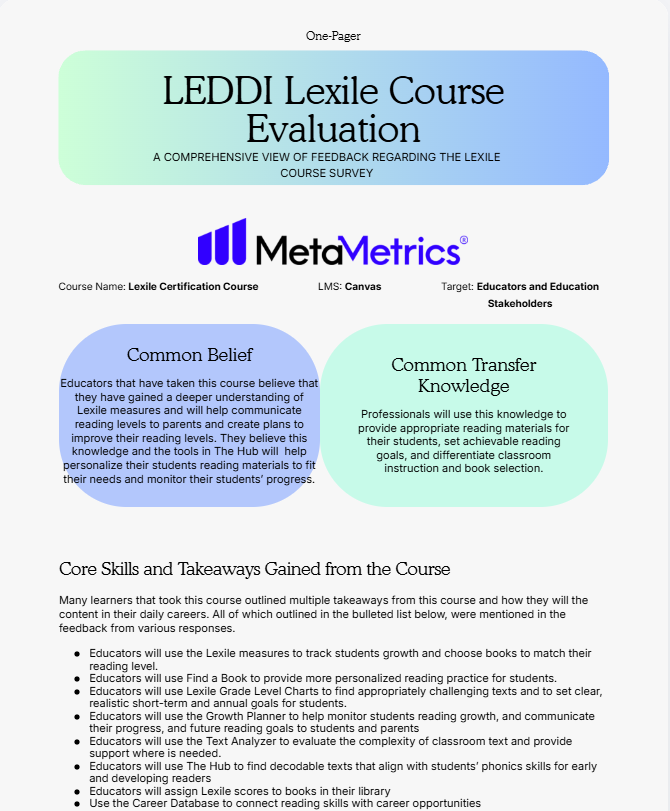

Examining an educational learning resource and its potential
to support professional learning.
DATA ANALYSISSTAKEHOLDER INSIGHTSPRODUCT EVALUATION
THE DELIVERABLE
Turning feedback into insight
An external-facing report combining quantitative and
qualitative findings from an educational learning experience.
FEATURED ARTIFACT

One-page course evaluation report developed for MetaMetrics.
BEHIND THE PROJECT
Understanding the learning experience.
Using stakeholder feedback and course data to communicate
educational value and identify opportunities for improvement.
01ARTIFACT OVERVIEW
Image Description
The image above shows a one-page report that I created
for MetaMetrics after analyzing data collected from
education stakeholders who completed the Lexile Canvas
course internationally, specifically in South Korea.
This report includes several sections, including visual
and numerical metrics, course benefits, participant
quotes, and key takeaways from the learning experience.
I also developed a separate internal document outlining
data-informed recommendations for improving the course.
02PROJECT RATIONALE
Project Purpose
The purpose of this project was to analyze data from the
Lexile Canvas course to demonstrate its value to education
stakeholders and highlight the importance of understanding
the Lexile Framework that serves as the foundation of
MetaMetrics' work. Through this project, I developed an
external-facing report that combined quantitative and
qualitative findings to communicate the course's benefits
to prospective students and international administrators
and present how the course benefits participating educators.
I also created an internal document with data-informed
recommendations to help MetaMetrics identify opportunities
for improvement and strengthen the course for future learners.
This experience allowed me to apply data analysis, research,
and communication skills to support both educational product
marketing and continuous product improvement.